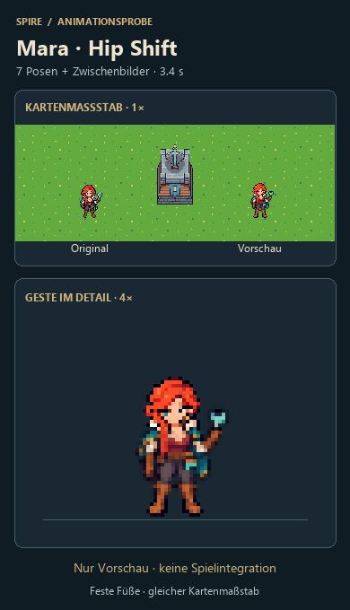
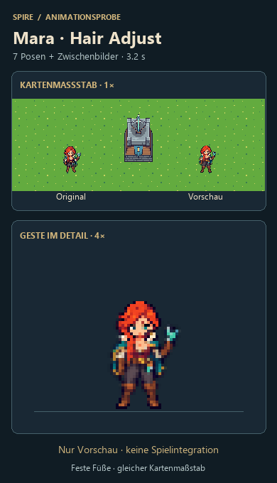
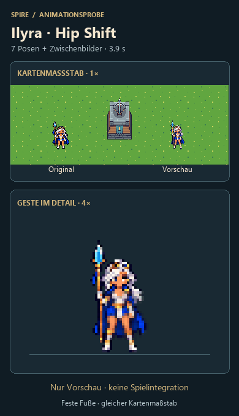

Drei Idle-Gesten · V2
Oben Kartenmaßstab, unten dieselben Frames 4× vergrößert. Stabilisierte Übergänge · nur Vorschau.

GIF speichern · 3,4 s
GIF speichern · 3,2 s
GIF speichern · 3,9 sOben Kartenmaßstab, unten dieselben Frames 4× vergrößert. Stabilisierte Übergänge · nur Vorschau.

GIF speichern · 3,4 s
GIF speichern · 3,2 s
GIF speichern · 3,9 s